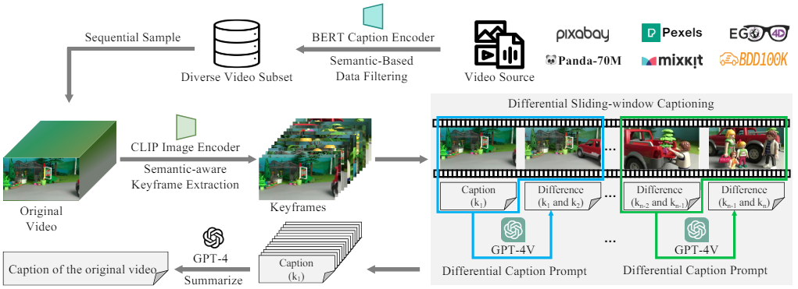

|
Greetings! I'm currently a PhD student in School of Automation, University of Science and Technology of China, advised by Prof. Feng Zhao. I got a B.E. degree at Anhui University in 2020 and join the USTC-BIVLab. And I serve as an research intern in Shanghai AI Laboratory now, supervised by Dr. Xiaoyi Dong, Dr. Pan Zhang and Dr. Jiaqi Wang. My research interest includes:
Email / Google Scholar / Github / HuggingFace / Twitter |

|
|
[2024.8] Thrilled that I've won third place on the July 2024 Most Impactful Users leaderboard on HuggingFace. [2024.7] Happy to announce that ShareGPT4V was accepted by ECCV 2024! [2024.6] üî• We release ShareGPT4Video, comprising 40K GPT4V-generated captions, 4.8M high-quality captions, a general video captioner, and a superior large multi-modal model, ShareGPT4Video-8B [2024.5] We release Open-LLaVA-Next, an open-source implementation of LLaVA-NeXT series for facilitating the large multi-modal model community. All training data and checkpoints at each stage are open-sourced, and friendly for research usage. [2024.4] We release MMStar, an elite vision-indispensable multi-modal benchmark. [2024.3] Two papers Rein and FreeDrag were accepted in CVPR 2024! [2023.11] üî• We release the ShareGPT4V project, comprising 100K GPT4-Vision-generated captions, 1.2M high-quality captions, a general image captioner, and a superior large multi-modal model, ShareGPT4V-7B [2023.7] DTP is accepted in ICCV 2023 and achieves SOTA in night-time and full-time semantic segmentation! [2023.7] We release the FreeDrag framework for more superior and stable "drag" editing! [2022.10] Our DDB receives the Spotlight Award in NeurIPS 2022! [2022.9] DDB is accepted in NeurIPS 2022 and achieves SOTA with ResNet counterparts on the single-source, multi-source, and multi-target domain-adaptive semantic segmentation tasks! [2022.3] A discriminator-free adversarial domain adaptation framework DALN is accepted in CVPR 2022! |
|
[2022-07 ~ Now] Research Intern, Open Algorithm group of Shanghai AI Laboratory. [2022-03 ~ 2022-06] Computer Vision Intern, MMSegmentation team in OpenMMLab group of Shanghai AI Laboratory. |
|
* indicates the equal contribution. |
|
InternLM-XComposer-2.5: A Versatile Large Vision Language Model Supporting Long-Contextual Input and Output
Pan Zhang, Xiaoyi Dong, Yuhang Zang, Yuhang Cao, Rui Qian, Lin Chen, Qipeng Guo, Haodong Duan, Bin Wang, Linke Ouyang, Songyang Zhang, Wenwei Zhang, Yining Li, Yang Gao, Peng Sun, Xinyue Zhang, Wei Li, Jingwen Li, Wenhai Wang, Hang Yan, Conghui He, Xingcheng Zhang, Kai Chen, Jifeng Dai, Yu Qiao, Dahua Lin, Jiaqi Wang Arxiv, 2024 [paper] [demo] [code] A versatile large-vision language model that supports long-contextual input and output. IXC-2.5 excels in various text-image comprehension and composition applications, achieving GPT-4V level capabilities with merely 7B LLM backend. |
|

|
ShareGPT4V: Improving Large Multi-Modal Models with Better Captions
Lin Chen*, Jinsong Li*, Xiaoyi Dong, Pan Zhang, Conghui He, Jiaqi Wang, Feng Zhao, Dahua Lin ECCV, 2024 [project page] [paper] [demo] [code] We propose the ShareGPT4V project, comprising 100K GPT4-Vision-generated captions, 1.2M high-quality captions, a general image captioner, and a superior large multi-modal model, ShareGPT4V-7B |

|
Prism: A Framework for Decoupling and Assessing the Capabilities of VLMs
Yuxuan Qiao, Haodong Duan, Xinyu Fang, Junming Yang, Lin Chen, Songyang Zhang, Jiaqi Wang, Dahua Lin, Kai Chen Arxiv, 2024 [paper] [code] We present Prism, an innovative framework designed to disentangle the perception and reasoning processes involved in visual question solving. |
|  |
ShareGPT4Video: Improving Video Understanding and Generation with Better Captions
Lin Chen*, Xilin Wei*, Jinsong Li*, Xiaoyi Dong, Pan Zhang, Yuhang Zang, Zehui Chen, Haodong Duan, Bin Lin, Zhenyu Tang, Li Yuan, Yu Qiao, Dahua Lin, Feng Zhao, Jiaqi Wang Arxiv, 2024 [project page] [paper] [code] A large-scale highly descriptive video-text dataset, with 40K captions annotated by GPT4V and 4.8M captions annotated by our ShareCaptioner-Video. The total videos last with 300 hours and 3000 hours separately! |
|
Are We on the Right Way for Evaluating Large Vision-Language Models?
Lin Chen*, Jinsong Li*, Xiaoyi Dong, Pan Zhang, Yuhang Zang, Zehui Chen, Haodong Duan, Jiaqi Wang, Yu Qiao, Dahua Lin, Feng Zhao Arxiv, 2024 [project page] [paper] [code] We identify two primary issues in existing evaluation studies for large vision-language models. We further develop an elite vision-indispensable multi-modal benchmark and two novel metrics to measure data leakage and actual performance gain in multi-modal training. |
|

|
Stronger, Fewer, & Superior: Harnessing Vision Foundation Models for Domain Generalized Semantic Segmentation
Zhixiang Wei*, Lin Chen*, Yi Jin*, Xiaoxiao Ma, Tianle Liu, Pengyang Ling, Ben Wang, Huaian Chen, Jinjin Zheng CVPR, 2024 [paper] [code] We propose the Rein framework, which efficiently fine-tunes vision foundation models for the domain generalized semantic segmentation (DGSS) task with just 1% trainable parameters, surprisingly surpassing full parameter fine-tuning. And Reins builds a new SOTA in various DGSS benchmarks. |

|
FreeDrag: Point Tracking is Not What You Need for Interactive Point-based
Image
Editing
Pengyang Ling*, Lin Chen*, Pan Zhang, Huaian Chen, Yi Jin CVPR, 2024 [project page] [paper] [demo] [code] We propose a novel "drag" editing framework called FreeDrag free of the burden of erroneous point tracking and enables achieving stable point-based editing in challenging scenarios with similar structures, fine details, or under multi-point targets. |

|
Disentangle then Parse:
Night-time Semantic Segmentation with Illumination Disentanglement
Zhixiang Wei*, Lin Chen*, Tao Tu, Huaian Chen, Pengyang Ling, Yi Jin ICCV, 2023 [paper] [code] We propose a novel nigh-time semantic segmentation paradigm, i.e., disentangle then parse (DTP), which explicitly disentangles night-time images into light-invariant reflectance and light-specific illumination components and then recognizes semantics based on their adaptive fusion. |

|
Deliberated Domain Bridging for Domain Adaptive Semantic
Segmentation
Lin Chen*, Zhixiang Wei*, Xin Jin*, Huaian Chen, Miao Zheng, Kai Chen, Yi Jin NeurIPS, 2022, [paper] [code] We leverage the complementary characteristics of the coarse-wise and fine-wise data mixing techniques to progressively transfer the knowledge from the source to the target domain. |

|
Reusing the Task-specific Classifier as a Discriminator: Discriminator-free
Adversarial Domain Adaptation
Lin Chen*, Huaian Chen*, Zhixiang Wei, Xin Jin, Xiao Tan, Yi Jin, Enhong Chen CVPR, 2022 [paper] [code] We reuse the category classifier as a discriminator to form a discriminator-free adversarial learning framework. |
|
|
|
|
|
|

|
University of Science and Technology of China, Anhui, China
PhD candidate in Computer Vision (Jan. 2020 to present) |

|
Anhui University, Anhui, China B. Eng in Electronic Information Engineering (2016 to 2020) |
|
Thanks the original template from jonbarron and the modifications made by shi. |